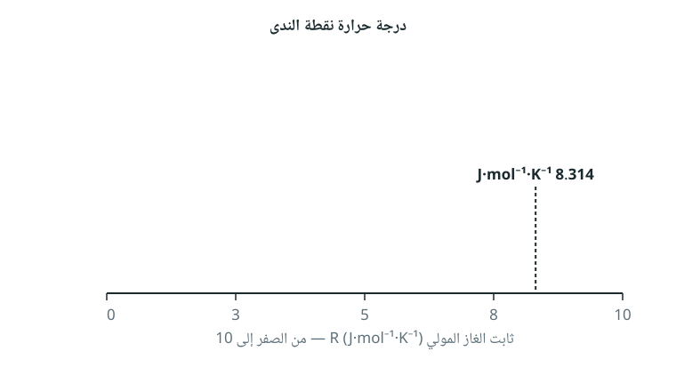

درجة حرارة نقطة الندى
Dew point temperature
درجة حرارة نقطة الندى هي الحرارة التي يبلغ عندها بخار الماء في الهواء تشبعه إذا بُرد عند ضغط ثابت وثبات كمية البخار، وعندها يبدأ التكاثف على الأسطح الباردة.
نقطة الندى T_d هي درجة الحرارة التي يصير عندها الهواء مشبعاً ببخار الماء إذا بُرد عند ضغط ثابت دون إضافة أو إزالة بخار. وهي مقياس مباشر لمحتوى الهواء من البخار: كلما زاد البخار ارتفعت نقطة الندى واقتربت من حرارة الهواء. والعلاقة بين ضغط البخار ونقطة الندى تُعطى بمعادلة ماغنوس التقريبية: e = 6.112·exp(17.62·T_d/(243.12 + T_d)) بالهكتوباسكال. مثال: هواء حرارته 25 °م ونقطة نداه 15 °م له رطوبة نسبية 53.8%، وإذا بُرد إلى 15 °م بلغ التشبع وبدأ التكاثف — ولهذا تتكوّن قطرات على كأس ماء بارد حرارته تحت نقطة الندى.
كيف تعمل الظاهرة؟
بخار الماء في الهواء ليس غازاً مثالياً تماماً، بل هو بخار في توازن مع الماء السائل. وضغط بخاره المشبع يعتمد على الحرارة وحدها: كلما ارتفعت الحرارة، زاد عدد الجزيئات التي تملك طاقة كافية للفرار من السائل، فزاد الضغط المشبع. والهواء الذي فيه بخار أقل من التشبع له ضغط بخار فعلي أقل من المشبع عند حرارته. فإذا بُرد الهواء عند ثبات ضغطه، نقص ضغط التشبع حتى يصير مساوياً للضغط الفعلي، وعندها يصير الهواء مشبعاً ويبدأ البخار بالتكاثف على أي سطح بارد. ولهذا تتكون قطرات الندى ليلاً حين يبرد السطح بالإشعاع تحت نقطة الندى.
العلاقة بالأرقام
e = 6.112·exp(17.62·T_d/(243.12 + T_d)) hPa، وe_s(T) = 6.112·exp(17.62·T/(243.12 + T)) hPa، وRH = 100·e/e_s. مثال عددي: T_d = 15 °م → e = 17.02 hPa؛ T = 25 °م → e_s = 31.60 hPa؛ RH = 53.9%. والتحقق العكسي: من RH = 53.9% وT = 25 °م، e = 0.539 × 31.60 = 17.03 hPa، ومنه T_d = 15.0 °م — مطابق. والفرق T − T_d = 10 K يُسمى الانتشار الرطبي، وهو مقياس جفاف الهواء.
مفاهيم متقاربة
يُفرَّق بين نقطة الندى والرطوبة النسبية في الاستعمال: نقطة الندى تقيس كمية البخار فعلياً، والرطوبة النسبية تقيس قرب الهواء من التشبع. ولهذا تُستعمل نقطة الندى في الأرصاد الجوية والتبريد لأنها لا تتغير بالتدفئة، بينما تنقص الرطوبة النسبية إلى النصف تقريباً عند تدفئة الهواء عشر درجات. ويُفرَّق بين نقطة الندى ودرجة الحرارة الرطبة: الرطبة تُقاس بترمومتر ملفوف بقماش مبلل وتشمل أثر التبريد التبخيري، وهي أقل من الحرارة الجافة وأعلى من نقطة الندى عادة. وأخيراً يُفرَّق بين التكاثف والتبخّر: التكاثف يحتاج نوى تكاثف، ولهذا لا يتكون الضباب في هواء نقي جداً بسهولة.
حدود التطبيق
معادلة ماغنوس تقريبية، وصلاحيتها من −45 °م إلى 60 °م بخطأ أقل من 0.4 K، ولا تصح خارج هذا المدى. وهي تفترض ضغطاً قريباً من الضغط الجوي، فلا تصح في الارتفاعات العالية أو في أنظمة الضغط العالي. ولا تصف التكاثف فوق الصفر فقط: تحت الصفر يتكاثف البخار صقيعاً مباشرة وقد تبقى قطرات فوق مبردة سائلة، فتُستعمل معادلات منفصلة للماء وفوق الجليد. وأخيراً نقطة الندى لا تحدد متى يتكون الضباب: ذلك يحتاج نوى تكاثف وتبريداً كافياً وخلطاً.

| الكمية | القيمة | المصدر |
|---|---|---|
| ضغط البخار الفعلي عند نقطة ندى 15 °م | 17.02 hPa | [2] |
| الرطوبة النسبية لهواء 25 °م ونقطة ندى 15 °م | 53.9 % | [2] |
المصادر
- 1 CODATA Value: molar gas constant — NIST — CODATA 2022 recommended values (2024). physics.nist.gov/cgi-bin/cuu/Value?r · اطُّلع عليه 2026-11-21
- 2 NISTIR 5078 — Thermodynamic Properties of Water, 0 to 374 C and Pressures to 100 MPa (IAPWS-95 tabulation) — NIST — National Institute of Standards and Technology (1998). www.nist.gov/publications/thermodynamic-properties-water-temperatures-0-374-c-and-pressures-100-mpa · اطُّلع عليه 2026-11-21
- 3 The International System of Units (SI), 9th edition (2019) — BIPM — Bureau International des Poids et Mesures (2019). www.bipm.org/en/publications/si-brochure · اطُّلع عليه 2026-11-21
استشهد بهذا المصطلح
الصيغتان مبنيتان من بيانات الصفحة نفسها: العنوان والتاريخ ورابط النسخة المنشورة.
درجة حرارة نقطة الندى — Dew point temperature. (2026). ديوان المعرفة — انفراد. https://infiradev.com/diwan/terms/term-dew-point-temperature.html
@misc{term-dew-point-temperature2026,
title = {درجة حرارة نقطة الندى},
titleaddon = {Dew point temperature},
howpublished = {{ديوان المعرفة — انفراد} — مرجع علمي عربي},
year = {2026},
url = {https://infiradev.com/diwan/terms/term-dew-point-temperature.html},
urldate = {2026-11-26},
note = {مراجعة علمية: hermes (مراجعة معتمدة 2026-11-26)}
}
راجعه: hermes (مراجعة معتمدة 2026-11-26) · 2026-11-26 · آخر تحديث 2026-11-21